측량및지형공간정보기사 (2009-03-01 기출문제)
1과목: 측지학 및 위성측위시스템
1. 다음 중 GPS를 이용하여 위치를 결정하는 경우에 대한 설명으로 틀린 것은?
- 반송파를 이용한 위치결정이 코드를 이용한 경우보다 정확하다.
- 단독측위보다 상대측위가 정확하다.
- 위성의 대수가 많을수록 정확하다.
- 위성의 고도가 낮을수록 정확하다.
(정답률: 67%)

2. 천문측량에서 항성의 위치오차의 원인이 아닌 것은?
- 세차
- 장동
- 광행차
- 국심변화
(정답률: 44%)
3. 다음 중 모호정수(ambiguity)를 포함하지 않는 관측치는?
- 차분되지 않은 반송파
- 단일차분 된 반송파
- 이중차분 된 반송파
- 삼중차분 된 반송파
(정답률: 72%)
4. 거리의 허용정밀도가 1/106일 때 지구의 곡률을 고려하여야 하는 측량구역은?
- 직경=22km, 면적=400km2 이상인 지역
- 직경=11km, 면적=400km2 이상인 지역
- 직경=22km, 면적=100km2 이상인 지역
- 직경=11km, 면적=100km2 이상인 지역
(정답률: 37%)
5. 위성측량에서 위성의 궤도와 임의 시각의 궤도 상의 위치를 결정할 수 있는 위성의 궤도요소가 아닌 것은?
- 궤도의 장반경
- 승교점(ascending node)의 적위
- 궤도 경사각
- 궤도 이심율(eccentricity)
(정답률: 70%)
6. 지구를 반경 6500km인 구로 가정했을 때 위도 60도에서 평행권의 둘레는 약 얼마인가?
- 20420 km
- 30420 km
- 40420 km
- 5020 km
(정답률: 58%)
7. 지구상의 어느 한 점에서 타원체의 법선과 지오이드의 법선은 일치하지 않게 되는데 이 두 법선의 차이를 무엇이라 하는가?
- 중력 편차
- 지오이드 편차
- 중력 이상
- 연직선 편차
(정답률: 60%)
8. 다음 중 RINECX 파일에 대한 설명 중 틀린 것은?
- RINEX는 GPS 수신기 기종에 따라 기록 방식이 달라 이를 통일하기 위해 만든 표준파일형식이다.
- 헤더부분에는 관측정명, 안테나높이, 관측날짜, 수신기명 등 파일에 대한 정보가 들어간다.
- RINEX 파일로 변환하였을 경우 자료처리의 신뢰도를 높이기 위해 사용자가 편집 못하도록 해 놓았다.
- 반송파, 코드 신호를 모두 기록한다.
(정답률: 80%)
9. GPS 측량의 오차에 관한 설명 중 틀린 것은?
- 전리층 통과시 전파의 운반지연량은 기온, 기압, 습도 등의 기상 측정에 의해 보정될 수 있다.
- 기선해석에서 고정점의 좌표 정확도는 신점의 위치정확도에 영향을 미친다.
- 일중차의 해석 처리만으로는 GPS 위성과 GPS 수신기 모두의 시계오차가 소거되지 않는다.
- 동 기종의 GPS 안테나는 동일방향을 향하도록 설치함으로써 전파 입사각에 의한 위상의 엇갈림에 대한 영향을 줄일 수 있다.
(정답률: 84%)
10. 관측점 사이의 고도차에 존재하는 물질의 인력이 중력에 미치는 영향을 고려하는 보정을 무엇이라 하는가?
- 자유고도(free-air) 보정
- 위도 보정
- 부게(Bouguer) 보정
- 계기 보정
(정답률: 84%)
11. 구과량(A)와 구면삼각형 면적(B)의 관계로 옳은 것은? (단, a는 비례상수)
- A=a√B
- A=aㆍB
- A=a/B
- A=aㆍB2
(정답률: 73%)
12. 지구의 편평률이 1/297에서 1/400로 됬을 때 지구의 적도 반지름이 일정하다면 극반지름은?
- 일정
- 감소
- 증가
- 관계없다.
(정답률: 73%)
13. GPS의 설명 중 잘못된 것은?
- GPS는 원래 미국과 동맹국의 군사적 목적으로 개발되었으나, 현재는 일반인에게 위치정보제공을 위한 중요한 사회기반으로 활용되고 있다.
- GPS는 고도 약 20200km에서 타원 궤도를 그리며 운행하는 인공위성으로 구성되어 있다.
- GPS 위성의 고도는 중력이상이 궤도에 미치는 영향이 커 정밀한 궤도 계산이 어렵다.
- GPS 위성은 지상제어국에 의해 제어된다.
(정답률: 89%)
14. 자자기 측정에 대한 설명 중 옳지 않은 것은?
- 지자기는 위치에 따라 그 방향과 크기가 다르다.
- 지자기의 방향과 자오선이 이루는 각을 편각이라 한다.
- 지자기의 방향과 수평면이 이루는 각을 복각이라 한다.
- 지자기의 자오선 방량 강도를 수직분력, 묘유선 방향 감도를 수평분력이라고 한다.
(정답률: 75%)
15. 다음 GPS 관련 오차 중에서 위성과 수신기 간의 거리계에 가장 큰 영향을 주는 것은?
- 위성의 시계오차
- 안테나의 위상중심오차
- 전리층 지연오차
- 다중전파경로(multipath)에 의한 오차
(정답률: 28%)
16. 유니버설 횡 메르카토르 좌표계(UTM좌표계)에 대해 설명으로 옳지 않은 것은?
- 지구를 6° 경도대로 나누어 이 경도대마다 각각 투영한도법이다.
- 극 지역에는 따로 UPS 좌표계를 사용한다.
- 경선은 투영면에 직선으로 투영된다.
- 중앙경선상의 축척계수를 0.9996으로 하면, 중앙경선에서 동서로 각각 약 180km 떨어진 곳에서 축척계수가 1.000이 된다.
(정답률: 67%)
17. 다음 중 항공측량부분의 GPS 응용에서 GPS의 단점을 보완할 수 있는 장치로서 촬영비행기의 위피를 구하는 데 많이 활용되고 있는 것은?
- 관성한법장치(INS)
- 레이저스캐너(LIDAR)
- HRV 센서
- MSS 센서
(정답률: 65%)
18. GPS에 의한 단독측위에 대한 설명 중 잘못된 것은?
- GPS 수신기 한 대로 위치결정을 할 수 있다.
- 1초 또는 1/10초 간격으로, 거의 순간적으로 현재 위치를 파악할 수 있다.
- 단독측위는 코드 신호를 이용하여 산출된 의사거리를 사용하여 위치를 결정한다.
- 우주공간부터 항공, 해상, 지상, 땅 속이나 물 속 등 어느 곳을 막론하고 사용 가능하다.
(정답률: 64%)
19. 지자기측량에서 필요한 보정과 관계없는 것은?
- 시간적 변화에 따른 보정
- 기준점 보정
- 온도 보정
- 에트베스 보정
(정답률: 43%)
20. UTM좌표계에 우리나라가 속해 있는 UTM도엽 중 52S 구역의 원점은?
- 중앙자오선 동경 125°와 적도
- 중앙자오선 동경 127°와 적도
- 중앙자오선 동경 129°와 적도
- 중앙자오선 동경 135°와 적도
(정답률: 72%)
2과목: 응용측량
21. 다음 중 곡선의 용도가 다른 것은?
- 2차 포물선
- 3차 포물선
- 클로소이드(Clothoid) 곡선
- 렘니스케이트(Lemniscate) 곡선
(정답률: 42%)
22. 하천의 ㉠ 이수 목적(利水目的)과 ㉡ 치수 목적(治水目的)에 이용되는 각각의 수위는?
- ㉠ 평균 최저 수위, ㉡ 평균 최고 수위
- ㉠ 평균 최저 수위, ㉡ 평균 최저 수위
- ㉠ 평균 최고 수위, ㉡ 평균 최저 수위
- ㉠ 평균 최고 수위, ㉡ 평균 최고 수위
(정답률: 58%)
23. 터널의 변형조사 측량과 거리가 먼 것은?
- 중심측량
- 삼각측량
- 고저측량
- 단면측량
(정답률: 47%)
24. 그림과 같이 간격을 d로 일정하게 나누어 그 면적을 구할 때 사다리꼴 공식을 이용하여 구한 면적(m2)은?
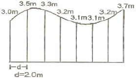
- 45.5m2
- 46.7m2
- 49.8m2
- 51.0m2
(정답률: 47%)
25. 노선의 횡단측량작업에서 측량이 잘목된 경우 공사량(토공량)에 큰 변화를 가져오게 되는데 그 원인으로 거리가 먼 것은?
- 횡단방향의 높이와 거리의 오측
- 횡단방향 설정의 착오
- 횡단방향 측점 설치의 부족 및 부적합
- 횡단방향 추가말뚝의 과다 설치
(정답률: 59%)
26. 그림과 같은 토지의 한 변 BC=50m 상의 D와 AC=46m 상의 점 E를 연결하여 △ABC의 면적을 2등분(m:n-1:1)하려면 AE의 길이를 얼마로 하여야 하는가?
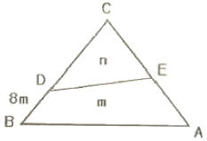
- 18.6m
- 20.8m
- 21.2m
- 27.8m
(정답률: 30%)
27. 다음 그림은 도로의 횡단면도를 나타낸 것이다. 이 횡단면의 면적은? (단, 단위는 m임)
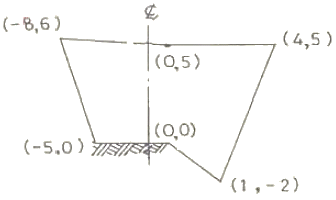
- 13.0m2
- 51.5m2
- 43.5m2
- 26.5m2
(정답률: 24%)
28. 지하시설물의 관측방법 중 조사구역을 적당한 격자 간격으로 분할하여 그 격자점에 대한 자력 값을 관측함으로써 지하의 자성체의 분포를 추정하는 방법은?
- 자장관측법
- 자기관측법
- 전자관측법
- 탄성파관측법
(정답률: 50%)
29. 다음과 같이 면적을 m:n으로 분할 하고자 할 때
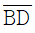
의 길이를 구하기 위한 식으로 적절한 것은?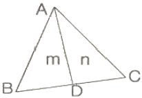
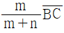
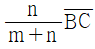
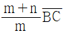
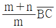
(정답률: 34%)
30. 지하시설물에 대한 측량간격은 20m이하를 원칙으로 한다. 다음 중 간격에 관계없이 반드시 측량하여야 하는 경우가 아닌 것은?
- 지하시설물의 지흠 또는 재질이 변경된 경우
- 지하시설물이 교차ㆍ분기되거나 상태가 바뀌는 경우
- 지하시설물이 직선구간인 경우
- 지하시설물에 각종 제어장치 또는 밸브가 있는 경우
(정답률: 55%)
31. 원곡선에 의한 종단곡선에서 반경 3000m의 종단곡선을 설치할 경우 종단곡선 시점으로부터 수평거리 40m인 지점에서 경사선과 종단곡선간 수직거리(종거)는 얼마인가?
- 0.14m
- 0.27m
- 0.53m
- 0.58m
(정답률: 31%)
32. 클로소이드곡선의 매개 변수 A를 100m, 곡선의 반지름 R을 200m라 하면 완화곡선의 길이는 얼마인가?
- 40m
- 50m
- 100m
- 200m
(정답률: 39%)
33. 경관평가요인 중 시설물의 전체 형상을 인식할 수 있고 경관의 주제로서 가장 적당한 수평시각(θH)의 크기는?
- 0°＜θH≤10°
- 10°＜θH≤30°
- 40°＜θH≤60°
- 60°＜θH≤90°
(정답률: 64%)
34. 하천 측량에 대한 설명 중 옳지 않은 것은?
- 수위 관측소의 위치는 지천의 합류점 및 분류점으로서 수위의 변화가 뚜렷한 곳이 적당하다.
- 하천측량에서 수준측량을 할 때에 거리표는 하천의 중심에 직각 방향으로 설치한다.
- 심천측량은 하천의 수심 및 유수부분의 하저 상활을 조사하고 횡단면도를 제작하는 측량을 말한다.
- 하천 측량시 처음에 할 일은 도상 조사로서 유로상황, 지역면적, 지형지물, 토지이용 상황 등을 조사하여야 한다.
(정답률: 50%)
35. 직선과 반지름(R)=500m의 원곡선 사이에 3차 포물선에 의한 150m 길이의 완화곡선을 설치할 경우 완화곡선 시점 A(B.T.C)로부터 주접선상 100m인 지점에서 완화곡선상 C점까지의 수직거리 Y는 얼마인가?
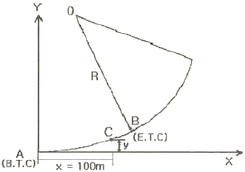
- 0.22m
- 1.75m
- 2.22m
- 2.75m
(정답률: 28%)
36. 두 직선의 교각이 80°, 외할(E)이 25m인 두 직선 사이에 곡선을 설치하고자 한다. 이 때 반경 R을 얼마인가?
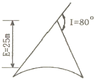
- 51.86m
- 61.86m
- 71.86m
- 81.86m
(정답률: 36%)
37. 터널 갱구를 연결하는 다각측량을 실시하여 A(50m, 80m), B(-100m, -200m)를 얻었다. AB측선의 방위각은?
- 40° 25‘ 12“
- 61° 49‘ 17“
- 170° 20‘ 08“
- 241° 49‘ 17“
(정답률: 50%)
38. 하천의 어느 지점에서 유량측정을 위하여 필요한 직접적인 관측사항이 아닌 것은?
- 강우량 측정
- 유속 측정
- 심천측량
- 유수단면적 측정
(정답률: 60%)
39. 하천의 유속측정에서 수면으로부터 0.2h, 0.6h, 0.8h 깊이의 유속(m/sec)이 각각 0.562, 0.497, 0.364 이었다. 이 때 평균유속이 0.463m/sec이었다면 어느 방법으로 계산한 것인가? (단, h : 하천의 수심)
- 1점법
- 2점법
- 3점법
- 4점법
(정답률: 54%)
40. 터널내 A, B의 좌표가 A(x=1328.0m, y=810.0m, z=86.30m), B(x=1734.0m, y=589.0m, z=112.40m)일 때 두 점을 굴진하는 경우 A, B점의 경사각은?
- 약 3°
- 약 5°
- 약 7°
- 약 9°
(정답률: 40%)
3과목: 사진측량 및 원격탐사
41. 다음 중 일반적인 자리정보데이터 유형으로 적합하지 않은 것은?
- GPS 좌표 point
- Tomography Map
- Geographic Vector Map
- Satrllite Image Map
(정답률: 67%)
42. 다음 벡터구조 방식의 수치표고자료 모형은?
- grid DEM
- DTED
- grid DSM
- TIN
(정답률: 75%)
43. 고해상도 전정색(흑백) 공간영상자료와 저해상도 다중분광(컬러) 공간영상자료를 배합하여 고해상도 컬러영상을 제작하는 해상도병합(Resolution Fusion) 기법이 아닌 것은?
- 색상공간모델 변환(RGB ↔ IHS Transform)
- 주성분분석 변환(Principal Component Analysis Transform)
- 브로비 변환(Brovey Transform)
- 휴리에 변환(Fourier Transform)
(정답률: 55%)
44. 적외선에 감광하는 필름의 층을 붉게 발색시키는 것으로 식물의 잎이 적색으로 찍히게 되어 식물의 연구나 조사 등에 이용되는 사진은?
- 팬크로 사진
- 자외선 사진
- 위색 사진
- 천연색 사진
(정답률: 39%)
45. 일반적 원격탐사 영상의 해상도 중에 센서가 기록 가능한 전자기 스펙트럼의 파장범위를 일컫는 것은?
- 분광해상도(Spectral Resolution)
- 방사해상도(Radiometric Resolution)
- 공간해상도(Spatial Resolution)
- 주기해상도(Temporal Resolution)
(정답률: 50%)
46. 수치사진측량(digital photogrammetry)에서 상호표정의 자동화를 위해 요구되는 기법은?
- 디지타이징
- 좌표등록
- 영상정합
- 직접표정
(정답률: 31%)
47. 항공사진촬영에서 시속 220km/h로 촬영할 경우 허용흔들림이 사진상에서 0.⑤mm이면 최장노출시간은 약 몇 초인가? (단, 축척은 1/25000)
- 1/40
- 1/50
- 1/60
- 1/70
(정답률: 29%)
48. 다음 메타 데이터의 요소 중 데이터의 제목, 지리적 범위, 제작일 등을 나타내는 것은?
- 식별정보
- 품질정보
- 공간정보
- 속성정보
(정답률: 59%)
49. 표정점 및 지상기준점에 대한 설명으로 틀린 것은?
- 상호표정이나 접합표정에 사용되는 표정점은 수평위치나 수직위치를 알지 못해도 가능하나, 절대표정에 사용되는 경우에는 수평위치나 수직위치를 반드시 알아야 한다.
- 지상기준점에서 수평위치기준점은 삼각점이나 측량을 통해 얻은 좌표점으로 구할 수 있으며, 표고기준점(수직위치기준점)은 수준점이나 간이수준점 등에서 얻을 수 있다.
- 절대표정을 위해 최소한 2점의 수직 및 수평위치를 알고 있는 표정점이 있어야 하며, 표고기준점 2점과 수평위치기준점 1점이 있어도 무방하다.
- 지상기준점은 될 수 있으면 서로 떨어져 적당한 분포를 이루며 사진 상에서 명료한 판단관측ㅇ 가능해야 한다.
(정답률: 34%)
50. 다음 표는 영상 분류 오차 행렬(Classification Error Matrix)이다. PCC(Percent Correctly Classified) 지수는 얼마인가?
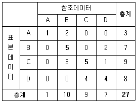
- 55.56(%)
- 37.04(%)
- 33.33(%)
- 25.93(%)
(정답률: 67%)
51. 상호표정과 가장 관계가 있는 것은?
- 횡(x)방향 시차를 소거하는 것
- 종(y)방향 시차를 소거하는 것
- 높이(z)방향 시차를 소거하는 것
- 평면(x, z)방향 시차를 소거하는 것
(정답률: 59%)
52. 격자형식의 데이터를 효율적으로 저장하기 위하여 사용하는 방식이 아닌 것은?
- 동일값을 갖는 데이터를 묶어서 저장하는 Run-length code 방식
- 데이터간의 연관성을 가지고 저장하는 관망형 방식(Network)
- 블록 단위로 나누어 저장하는 블록코드(Block-code) 방식
- 4등분하는 방식으로 데이터를 저장하는 Quadtree 방식
(정답률: 50%)
53. 1/20000 축척의 연직사진에서 초점거리 150mm 사진기에 의해 50m 구릉이 사진주점으로부터 방사방향 10cm 지점에 찍혔다면 편위량은?
- 0.06m
- 0.17m
- 0.52m
- 1.52m
(정답률: 31%)
54. 다음의 괄호 안에 들어갈 말이 맞게 짝지어진 것은?
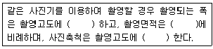
- 반비례 - 촬영고도 - 반비례
- 반비례 - 촬영고도의 제곱 - 비례
- 비례 - 촬영고도 - 비례
- 비례 - 촬영고도의 제곱 - 반비례
(정답률: 36%)
55. 주변의 알려진 값을 이용하여 값이 알려지지 않은 지점의 값을 추정하는 것을 공간추정 혹은 보간(interpolation)이라 한다. 다음 중 보간법과 관련이 없는 것은?
- 슬리버(sliver)
- 추이 분석(trend analysis)
- TIN*(Triangular lrregular Network)
- 무빙 애버리지(moving average)
(정답률: 59%)
56. 사진의 경사와 지표면의 비고를 수정하고 등고선을 삽입한 사진지도는?
- 정사투영 사진지도(orthophoto map)
- 조정집성 사진지도(controlled mosaic map)
- 약조정집성 사진지도(uncontrolled mosaic photo map)
- 반조정집성 사진지도(semi-controlled mosaic photo map)
(정답률: 34%)
57. 한 쌍의 입체모델에서 왼쪽 사진에 찍힌 도로상의 어느 차량이 오른쪽 사진에서는 주점기선에 대해 위쪽으로 이동한 상태로 촬영되었다. 이 모델을 입체시하면 차량은 어떻게 보이는가?
- 도로에 안착한 상태로 보인다.
- 도로 위에 떠 있는 상태로 보인다.
- 도로 아래로 가라앉아 있는 상태로 보인다.
- 입체시가 되지 않고 두 개의 차량으로 보인다.
(정답률: 40%)
58. 초점거리(f) 150mm인 사진기로 지표면으로부터 촬영고도 2700mm에서 촬영한 경우에 사진축척은 얼마인가?
- 1/20000
- 1/19000
- 1/18000
- 1/17000
(정답률: 50%)
59. 다음 중 지형공간정보체계의 일반적인 단계를 순서대로 바르게 표시한 것은?
- 자료의 수치화-자료조작 및 관리-응용분석-출력
- 자료조작 및 관리-자료의 수치화-응용분석-출력
- 자료의 수치화-응용분석-자료조작 및 관리-출력
- 자료조작 및 관리-응용분석-자료의 수치화-출력
(정답률: 58%)
60. 사진 상의 (10, 10) mm 위치에 도로선의 교차점이 관측되었다. 이 지점의 X좌표값을 지상좌표계로 160m로 가정할 때, 이 지점의 Y좌표값은? (단, 주점의 위치는 (-1,1)mm이고, 투영중심은 (50, 50, 1530)mm이며, 사진좌표계오 지상좌표계의 모든 좌표축의 방향은 일치한다.)
- Y=140m
- Y=160m
- Y=-140m
- Y=-160m
(정답률: 34%)
4과목: 지리정보시스템
61. 거리측량의 정확도가 1/n일 때 이에 따라 구해진 면적에 예상되는 정확도는?
- 1/n
- 1/n2
- 2/n2
- 2/n
(정답률: 29%)
62. 일반적인 경중률에 대한 설명으로 옳지 않은 것은?
- 분산의 크기에 비례한다.
- 관측값의 신뢰도를 표시하는 값이다.
- 관측 거리에 반비례한다.
- 관측 횟수에 비례한다.
(정답률: 17%)
63. 동일각을 측정함에 있어 측정회수를 다르게 적용하여 얻은 결과이다. 최확치는? (단, 42° 28‘40“(2회 측정), 42° 28’46”(4회 측정), 42° 28‘48“(6회 측정))
- 42° 28‘44“
- 42° 48‘46“
- 42° 28‘48“
- 42° 28‘50“
(정답률: 37%)
64. 1:25000의 지형측량에서 등고선을 그리기 위하여 결정한 측점의 도상 위치오차가 1.0mm, 높이의 오차가 2.5m, 그 지점의 경사각을 10°라 할 때 표고의 최대이동량은 약 얼마인가?
- 17m
- 7m
- 5m
- 4m
(정답률: 34%)
65. 국가 수준기준면과 수준원점의 관계에 대한 설명으로 옳은 것은?
- 국가 수준기준면과 수준원점은 일치한다.
- 제주도와 같은 섬에서도 국가 수준기준면을 사용하여야 한다.
- 국가 수준기준면으로부터 정확한 표고를 측정하여 수준원점을 설치한다.
- 국가 수준기준면을 만들기 위해 수준원점을 기준으로 평균해면을 관측한다.
(정답률: 28%)
66. A 및 B점의 좌표가 XA=+70.50m, YA=+120.60m, XB=+150.40m, YB=+630.10m이다. A에서 B까지 결합트래버스 측량을 하여 계산해 본 결과 합위거가 +82.30m, 합경거가 +513.00m이었다면 이 측량의 폐합차는?
- 1.24m
- 2.24m
- 3.24m
- 4.24m
(정답률: 47%)
67. 후시(B.S)=1.670m, 전시(F,.S)=1.320m일 때 미지점이 310.500m의 지반고를 갖는다면 기지점의 지반고는?
- 309.180m
- 310.150m
- 311.350m
- 312.170m
(정답률: 60%)
68. 다음 등고선의 성질 중 옳은 것은?
- 등고선은 도면 내에서는 폐합하지만 도면 외에서는 폐합하지 않는다.
- 등고선의 간격이 좀다는 것은 지표의 경사가 완만하다는 것을 뜻한다.
- 등고선은 지표의 최대경사선 방향과 평행하다.
- 등고선은 동굴과 절벽에서는 교차한다.
(정답률: 47%)
69. A와 B 두 지점간의 고저차를 구하기 위해 (1), (2) 및 (3)의 각각의 노선을 따라 직접 수준측량을 실시하여 아래 표와 같은 결과를 얻었다. 고저차의 최확값은?
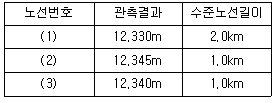
- 12.336m
- 12.33m
- 12.340m
- 12.345m
(정답률: 50%)
70. 삼각형의 내각을 같은 정밀도로 측량하여 변의 길이를 계산할 경우 각도의 오차가 변의 길이에 미치는 영향이 최소인 것은 어느 것인가?
- 정삼각형
- 직각삼각형
- 예각삼각형
- 둔각삼각형
(정답률: 69%)
71. 다음 단열삼각망에 대해 각 조정을 하였다. 각 조정 후 변조건에 의한 조정을 하려고 한다. 기선길이에 대한 거리 d1=152.132m이고, 검기선길이 d2=119.666m, a각에 대한 대수합(∑log sin)이 29.8040945, b각에 대한 대수합 (∑log sin)이 29.9083307, 표차의 총합은 61.84 이라면 변조건에 대한 a, b의 조정각은?
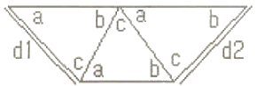
- a=-2.2", b=+2.2"
- a=+2.2", b=-2.2"
- a=-1.2", b=+1.2"
- a=+1.2", b=-1.2"
(정답률: 29%)
72. 삼각점 A에서 P, Q점을 시준할 수 없어 트랜싯(Transit)을 B점에 세워 편심 관측한 결과가 그림과 같을 때 ∠PAQ의 값은?
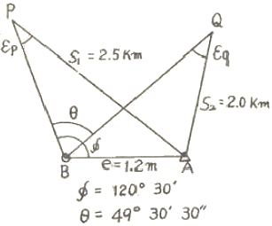
- 49° 30‘ 39“
- 49° 30‘ 29“
- 49° 29‘ 58“
- 49° 28‘ 58“
(정답률: 15%)
73. 트래버스측량에서 수평각 관측 방법에 의한 구분이 아닌 것은?
- 교각법
- 조합 관측법
- 편각법
- 방위각법
(정답률: 54%)
74. 축척 1/300 지형도를 기초로 하여 축척 1/000 지형도를 만들 때 축척 1/5000 의 1도엽은 축척 1/300 지형도 약 몇매를 포함하는가?
- 약 17매
- 약 144매
- 약 289매
- 약 582매
(정답률: 37%)
75. 어ᄄᅠᆫ 거리를 30m 테이프로 관측한 결과 180m의 최확값을 얻었다. 이 때 중등오차가 ±3.8cm 이었다면 테이츠 1회 관측에 대한 증등오차는?
- ±0.8cm
- ±1.2cm
- ±1.6cm
- ±5.9cm
(정답률: 25%)
76. 직사각형의 면적을 구하기 위하여 거리를 측량하였다. 가로=50.00±0.01m, 세로=100.00±0.02m일 때 면적에 대한 오차는?
- ±0.01m2
- ±0.03m2
- ±0.98m2
- ±1.41m2
(정답률: 19%)
77. 그림과 같이 기준점 A와 B간의 경사거리 L와 연직각 θ를 측량한 결과가 아래와 같다. 수평거리 Lo를 구할 때 발생될 오차의 크기는?
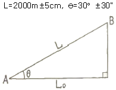
- ±8cm
- ±15cm
- ±20cm
- ±31cm
(정답률: 34%)
78. 삼각측량의 특징 중 잘못된 것은?
- 우리나라 1등 삼각측량은 변의 평균길이가 30km 정도이다.
- 삼각측량은 넓은 면적의 측량에 적합하다.
- 조건식이 많아 계산 및 조정방법이 복잡하다.
- 각 단계에서 정확도를 점검할 수 없다.
(정답률: 60%)
79. 트래버스 계산에서 합경거와 합위거를 구하는 주 목적은?
- 폐차를 구하기 위하여
- 배면적을 구하기 위하여
- 좌표를 구하기 위하여
- 재촉여부를 알기 위하여
(정답률: 36%)
80. 다음 오차의 종류 중, 수치연산과정에서 무한급수를 유한급수로 처리할 때 발생하는 오차는?
- 입력오차(input error)
- 변환오차(translation error)
- 절단오차(truncation error)
- 마무리오차(round-off error)
(정답률: 34%)
5과목: 측량학
81. 측량심의회의 공무원이 아닌 위원의 임기는?
- 1년
- 2년
- 3년
- 5년
(정답률: 34%)
82. 1:5000 지형도의 도엽의 1구획으로 옳은 것은?
- 경위도차 15분
- 경위도차 7분 30초
- 경위도차 1분 30초
- 경위도차 30분
(정답률: 50%)
83. 지형ㆍ지물의 변동 통보는 매년 언제까지 하여야 하는가?
- 2월말
- 3월말
- 4월말
- 5월말
(정답률: 47%)
84. 기본측량이라 함은 측량의 기초가 되는 측량으로 누가 실시하는 측량을 의미하는가?
- 국토해양부장관
- 국토지리정보원장
- 정부투자기관이 정하는 기관
- 정부출연연구기관
(정답률: 50%)
85. 측량기기의 성능검사대행자의 등록사항 중 변경사항이 발생할 경우 변경등록 또는 변경신고를 하여야 한다. 이때 변경등록사항이 아닌 것은?
- 검사시설 또는 검사장비의 변경
- 기술능력의 변경
- 법인의 대표자 또는 임원의 변경
- 상호의 변경
(정답률: 42%)
86. 기본측량을 위하여 설치된 측량표의 감시 의무자는?
- 대한측량협회 지부장
- 시장ㆍ군수 또는 구청장
- 지방경찰서장
- 국토지리정보원장
(정답률: 22%)
87. 공공측량계획기관이 시행하는 공공측량에 대한 설명 중 옳은 것은?
- 공공측량계획기관은 공공측량성과를 시ㆍ도지사에게 제출하여야 한다.
- 공공측량계획기관은 측량작업기준을 자체 작성하여 시행할 수 있으며 별도의 승인은 필요치 않다.
- 공공측량계획기관은 성과심사를 받은 측량성과를 이용하여 지도를 간행 판매할 수 있다.
- 지도를 간행하여 판매하고자 하는 공공측량계획은 관련 자료를 발매 10일 전까지 국토지리정보원장에게 제출하여야 한다.
(정답률: 34%)
88. 토털스테이션의 구조ㆍ기능검사 항목이 아닌 것은?
- 기포관의 부착 상태 및 기포의 정상적인 움직임
- 연직축 및 수평축의 회전 상태
- 위상차 점검
- 광학구심장치 점검
(정답률: 59%)
89. 다음 중에 측량업의 종류가 아닌 것은?
- 측지측량업
- 지도제작업
- 소규모측량업
- 지하시설물측량업
(정답률: 36%)
90. 1:25000 지형도의 난외주기(欄外註記)에 포함되는 사항이 아닌 것은?
- 철도
- 도로
- 공항
- 범례
(정답률: 37%)
91. 벌칙 기준 중 2년 이하의 징역 또는 2000만원 이하의 벌금에 해당되지 않는 것은?
- 측량업의 등록을 하지 않고 측량업을 한 자
- 측량성과를 고의로 사실과 다르게 한 자
- 기본측량을 위하여 설치된 측량표를 이전, 손괴, 기타 그 효용을 해하는 행위를 한 자
- 부정한 방법으로 측량업의 등록을 한 자
(정답률: 42%)
92. 일반측량은 무엇을 기초로 하여 실시하는 것을 원칙으로 하는가?
- 기본측량의 측량성과 및 측량기록만으로 한다.
- 공공측량의 측량성과 및 측량기록만으로 한다.
- 기본측량 또는 공공측량의 측량성과 및 측량기록을 기초로 한다.
- 공공측량 또는 일반측량의 측량성과 및 측량기록을 기초로 한다.
(정답률: 54%)
93. 기본측량을 위해 장애물의 제거 및 토지의 일시사용에 의한 행위에 따른 손실을 보상할 의무를 가진 사람은?
- 관할구청장
- 국토해양부장관
- 국토지리정보원장
- 시ㆍ도지사
(정답률: 58%)
94. 다음 중 측량업 등록을 할 수 있는 자는?
- 금고 이상의 형의 집행유예기간 중에 있는 자
- 금치산 또는 한정치산의 선고를 받은 자
- 1년 전에 측량업의 등록이 취소된 자
- 금고 이상의 형의 집행이 면제된 날로부터 3년이 경과된 자
(정답률: 50%)
95. 측량업에서 정한 용어의 정의 중 옳은 것은?
- 발주자라 함은 수급인으로부터 측량용역의 하도급을 받는자를 말한다.
- 측량업자라 함은 측량법의 규정에 의한 등록을 하여 측량업을 영위하는 자를 말한다.
- 측량작업기관이라 함은 국토지리정보원의 지시 또는 위임에 의하여 측량에 관한 작업을 실시하는 자를 말한다.
- 측량성과라 함은 측량에 관한 작업의 기록을 말한다.
(정답률: 46%)
96. 기본측량 용역의 경우 측량기술자의 측량용역현장 배치기준으로 옳은 것은?
- 초급기술자 1인 이상
- 중급기술자 1인 이상
- 고급기술자 1인 이상
- 특급기술자 1인 이상
(정답률: 50%)
97. 측량업의 등록을 한 자가 등록사항 중 보유한 측량기술자의 변경이 있을 때에는 그 변경이 있는 날로부터 몇 일 이내에 변경등록을 하여야 하는가?
- 7일
- 15일
- 30일
- 60일
(정답률: 47%)
98. 국토지리정보원장이 간행하는 지도의 축척이 아닌 것은?
- 1:100000
- 1:50000
- 1:20000
- 1:10000
(정답률: 59%)
99. 다음은 기본측량 및 공공측량의 기준에 관한 설명이다. 잘못된 것은?
- 위치는 지리학적 경위도와 평균해면으로부터의 높이로 표시한다.
- 지리학적 경위도는 세계측지계에 따라 측정한다.
- 거리 및 면적은 수평면상의 값으로 표시한다.
- 측량의 원점은 대한민국경위도원점 및 수준원점으로 한다.
(정답률: 50%)
100. 1:25000 지형도 도식 적용규정에서 규정한 지형의 설명으로 가장 적합한 것은?
- 지표면의 기복상태를 말하며 벼랑, 바위 등의 모든 특수지형이 포함된다.
- 자연적, 인공적 축조물의 고저기복 상태를 말한다.
- 토질, 지면의 상태, 토지의 이용현황을 말한다.
- 육지와 해면(수면)의 종류이다.
(정답률: 54%)